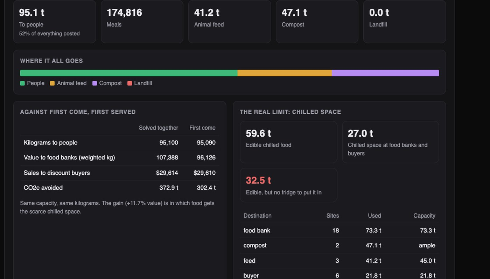
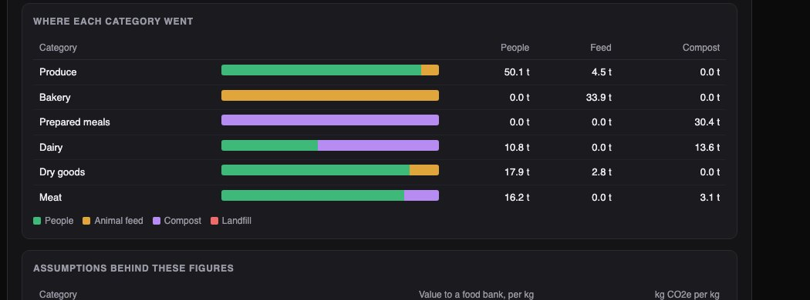

Python · Optimization · Sustainability · 2026-10
Where Should 183 Tonnes of Surplus Food Go?
A food-surplus exchange for an invented metro area: 12,000 lots graded for safety from age and temperature, matched to food banks, animal feed and compost in one solve, with truck rounds planned to beat every deadline. It used 65 trucks where one trip per seller needs 172, and exposed the real limit: 60 t of edible chilled food, 27 t of fridge space.

Built from a written blueprint as one vertical slice, on a simulated market: every seller, food bank and lot is generated, so each part can be checked against a known answer. Meals, CO2e and fee figures use illustrative assumptions that the system lists beside every result. No food photo is analysed: grades come from age and storage temperature. Not built: payments, real road distances, sensor feeds, Kafka, Terraform, single sign-on.
01 — The problem
Grocers and restaurants throw away food every day while food banks a few kilometres away run short. The hard part is not goodwill, it is matching: what is still safe, who has room (and fridge room), who closes at 4 pm, and whether a truck can get it there before it spoils. Can one system decide where every kilogram should go, people first, and plan the trucks?
Blueprint 4 of ten in a second build book, built as its demo scenario end to end.
02 — What I built
A Python service on PostgreSQL with a background worker and a web page, started by one docker compose up.
- Safety grading: how long each lot will really last, from its age and storage temperature.
- Forecast: tomorrow's surplus for every seller and category.
- Matching: every lot placed at once: people, then animal feed, then compost.
- Truck rounds: refrigerated pickups that are back before the earliest deadline on board.
- Re-planning: when a cooler fails, unsafe lots are withdrawn and the plan is solved again with few changes.
03 — How it was built
- 01
Do not trust the printed date
Food spoils faster when it is stored warm. The model uses a standard rule: each extra 10 degrees multiplies the spoilage rate (by 1.2 for dry goods up to 3.0 for meat). Food is offered to people only if the model predicts 12 hours of life left. Of 3,181 truly unsafe lots in the test markets, trusting the printed date would have offered 772 to people; the model offered 16. The price: it also held back about 250 more safe lots.
c["life"] * (q10 or c["q10"]) ** ((c["ref"] - mean_temp) / 10) - age_h - 02
Place every lot in one solve
Each lot can only go where the category is accepted, the grade allows, the place is still open when the truck returns, and the food arrives with enough life left. Chilled food also needs chilled room. Within those limits one solve maximises a score: a kilogram to people counts far more than feed, feed more than compost. First come, first served gives the nearest space to whoever posted first, including food that could have travelled.
score = np.where(tier == "people", TIER_SCORE["people"] * value + 20 * price, np.where(tier == "feed", TIER_SCORE["feed"], TIER_SCORE["compost"])) - 03
Find the real bottleneck
Both methods fill the food banks, so the meals count barely moves. What the solve changes is which food gets the scarce fridge space. And it makes the actual limit obvious: 59.6 t of edible chilled food against 27.0 t of chilled room. In the demo, all 30 t of prepared meals end up as compost. More trucks would not fix that; more fridges would.
"edible_chilled_kg_not_reaching_people": edible_cold - cold_people - 04
Plan rounds that beat the clock
For each food bank, pickups are grouped into truck rounds of at most 3,000 kg. A round may take no longer than the earliest deadline among its pickups, so nothing arrives late. That gave 65 trucks and 1,624 km, against 172 trucks and 3,444 km for one trip per seller.
model.AddDimension(time, 0, max(1, int(3600 * bound_h)), True, "time") - 05
Re-plan without chaos
A grocer's cooler fails overnight. Its 42 chilled lots are re-graded and 11 are withdrawn. Solving again from scratch would move thousands of lots, because many answers are equally good. A small bonus for "stay where you are" fixes that: in the demo 18 lots moved. A test found a real bug here too: big loads split across trucks were being counted on every truck.
for i, j in keep or (): dist[i, j] -= STAY_BONUS
04 — Results
One morning, 183 t posted: 95.1 t to people (about 174,800 meals), 41.2 t to animal feed, 47.1 t to compost, none to landfill.

| This build | Simple way | |
|---|---|---|
| Trucks | 65 | 172 |
| Kilometres | 1,624 | 3,444 |
| Unsafe lots offered | 16 | 772 |
| Forecast error | 26.7% | 33.3% |
Simple ways: one trip per seller; trusting the printed date; same weekday last week. The last three rows are from eight other simulated markets.
An honest finding. In kilograms or meals, the clever matching barely beats first come, first served: both fill the same space. Its gain (11.7% in the demo) depends on weights I chose for how much food banks value each category, and it follows them so literally that all bakery goes to animal feed. A real exchange would set those weights with its food banks.
Checks. 51 tests, including: the stored plan re-counted in SQL for capacity, fridge space and safety; every matched kilogram on exactly one truck; a closed food bank getting nothing on the next run; one exchange unable to see another's.
05 — What I'd do next
- Set the value weights with real food banks, with a minimum share per category.
- Real road times and one routing problem across all destinations.
- Temperature sensors instead of reported readings.